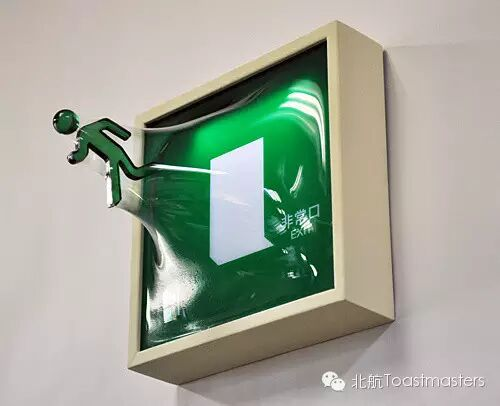
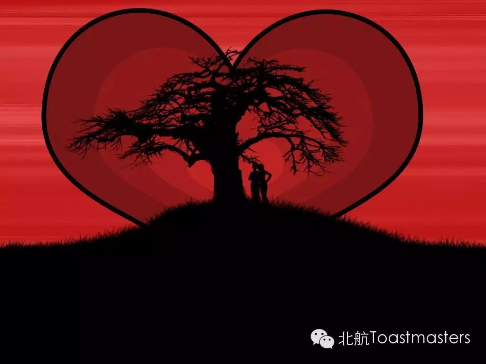

Toastmaster: Isabelle
Table Topic Master: Winston
Breakthrough
September 20th, a special and memorable day for many people, either in Beijing or all over the world, either for young men or aged , passionate men. Because,on that day, Beijing Marathon will be held. A friend told me, people should make breakthrough at least once in his whole life--physically or spiritually. Well,here comes the chance for him. I’m looking forward to his performance in marathon. Have you ever made a great breakthrough? Come on and share with us!

A view of love
We have fallen down again tonight ;
In this world it's hard to get it right ;
Trying to make your heart fit like a glove ;
What it needs is love, love, love …
Oh, love, "爱" in Chinese," l’amour" in French. What a beautiful word in this world. Ingrid Michaelson say in her song, everybody wants to love, everybody wants to be loved, just let love begin! Where is our lovely Junyar’s love? Let’s wait and see~
How to eat healthily
I have a dream；I have a dream that one day I can eat like this:
Monday, Beijing,Roast Duck;
Tuesday, Shaanxi, Rouga Mo;
Wedensday, Xinjiang,Barbecue;
Thursday, Sichuan, hot pot;
Friday, Guangxi, Guilin Mifen;
Saturday, Guangzhou, Barbecued pork bun(Cha Shao Bao);
Sunday, Northeast China, Double Cooked PorkSlices (Guo Bao Rou).
I have a dream that Ican taste all the food all over the world, day by day, week by week.But, here comes the problem. The premise is that I should have a healthy body.To realize my dream,I can’t wait to listen to Doctor Vicky’s speech. Come with me foodies!
 欢迎关注“北航Toastmasters”
欢迎关注“北航Toastmasters”https://mp.weixin.qq.com/s/G2YKN8r40SUhIUThSiN-0w
本页为抢救式本地归档，图文已永久保存。